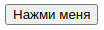

Здесь собран материал для опытных разработчиков на любом языке программирования, для которых язык JavaScript не является основным языком, но которым приходится периодически его использовать. Хотя в самом тексте автор обращается к разработчикам на JavaScript, которые толком не разобрались в языке, который они используют.
* * *
Так уж вышло, что с давних пор мне периодически доводилось принимать участие (иногда это периодически превращается в «c завидным постоянством») в собеседованиях специалистов, работающих на Javascript. Многие из них позиционируют себя как разработчики на различных современных фреймворках. Самое удивительное, когда респондент хорошо отвечает на вопросы об особенностях работы фреймворков, но не может ответить на базовые вопросы по Javascript. И тут уж каких только оправданий не услышишь! Вероятно, я зануда, но у меня в голове не укладывается, как, например, можно считаться хорошим разработчиком на React, если ты банально не знаешь Javascript?
Так сложилось, что помимо уже квалифицированных специалистов, в компании также существует набор «малышей» (стажёров). Некоторые обучались самостоятельно, кто‑то заканчивал курсы, но всех их объединяет одно ― теория. Очевидно, что они так или иначе её учили, но она плохо откладывается в голове без практики, а иногда просто не до конца усваивается из‑за сухости или сложности формулировок. Нередко уже на этом этапе у будущих программистов возникает ошибочное мнение, что знать теорию вовсе не обязательно. Главное ― это уметь делать. Ведь программирование ― прикладная дисциплина. Что, собственно, является чистой правдой, но было бы только что «прикладывать». Работая в команде высококвалифицированных специалистов, не стоит ожидать, что они будут каждый раз расшифровывать всё так, чтобы вам было понятно с тем уровнем знаний, на котором вы остановились. Им проще использовать уже готовую и понятную терминологию. Поэтому, если вы хотите участвовать в процессе разработки не только как «руки, которые пишут код», рано или поздно вам придётся подтягивать свои знания. Важно не просто выучить термины, а понимать, что от вас хочет человек, который их употребляет. Вы не обязаны определять их одними и теми же словами, как по методичке. Главное ― вкладывать в них один и тот же смысл.
А как сделать так, чтобы у достаточно большого количества людей сложилось приблизительно одинаковое представление о самых базовых и банальных понятиях? Посадить читать документацию! Да, это вариант. Но, к сожалению, документация ― это не легкое художественное чтиво. Это, прежде всего, стандарт. Читать его можно и нужно, но для стажёров это кажется непосильной задачей. Так родилась идея написания небольшой методички (действительно небольшой), которая затрагивает только самые базовые понятия, но необходимые для всех, кто хочет начать свой путь в мире JavaScript. В ней мы с коллегами постарались переделать всё настолько простыми словами, чтобы не вызывать у читающих мигрень и желание срочно сменить вид деятельности.
Ниже представлены на ваш суд всего несколько пунктов из этой методички, как пример того подхода к объяснению, что мы выбрали.
Немного баек. Первый и самый частый провал на собеседовании происходит при попытке ответить на вопрос: в чём заключаются отличия переменных, созданных с помощью конструкции let и с помощью конструкции var? Здорово, что все знают, что отличие в области видимости. Классно, что многие отвечают, что у let область видимости блочная. Проблемы начинаются, когда задаешь вопрос: ну а у var какая? Самый популярный ответ, что у var область видимости глобальная (спойлеры — нет!), а самый курьёзный, на мой взгляд, ответ, что область видимости «более глобальная, чем у let«. Никогда не надо так говорить, во‑первых, программисту вы этим ничего не скажете, кроме того, что вы не знаете ответа. Во‑вторых, вы поставите в неловкое положение своего преподавателя русского языка. Более глобальная? Куда уж глобальнее?
Итак, какие же бывают области видимости?
А теперь немного наглядных примеров для закрепления.
// Я глобальная область видимости
function test() {
// Я функциональная область видимости
var a = 10;
console.log("Я - переменная а, существую только внутри функции test", a);
}
test();
console.log("А вот тут я - переменная а - не существую", a);
Вывод в консоль:
|
> Я - переменная а, существую только внутри функции test 10 > ReferenceError: а is not defined |
Еще пример:
// Я - глобальная область видимости
// Я - глобальная область видимости
if (true) {
// Я - блочная область видимости
var a = 10 // меня не ограничить блоком, буду видна везде
let b = 200 // я буду видна только внутри этого блока
}
console.log(a)
console.log(b)
Вывод в консоль:
> 10
> ReferenceError: b is not defined
Но на самом деле Javascript не был бы Javascript, если бы не был полон сюрпризов. Если не включать strict‑режим, то можно создавать переменные и без конструкции var, let. Они автоматически становятся параметрами объекта window.
// Я глобальная область видимости
test = 400 // я переменная, созданная малограмотным специалистом
console.log(window.test)
console.log(test)
Вывод в консоль:
> 400
> 400
Контекст (и вечные проблемы его потери)
Контекст выполнения (execution context) — это, если говорить упрощённо, концепция, описывающая окружение, в котором производится выполнение кода на Javascript. Код всегда выполняется внутри некоего контекста.
Существует в общей сложности три типа контекста, хотя на практике мы работаем чаще всего с двумя первыми:
Многие предполагают, что this ― это и есть контекст, но это не совсем справедливо (а, может, и совсем несправедливо). This ― это ключевое слово, зарезервированное движком Javascript, при обращении к которому мы можем получить значение, зависящее от текущего контекста выполнения.
То есть:
И вот это, пожалуй, самый интересный вопрос.
В глобальном контексте, о котором речь шла ранее, this представляет собой ссылку на глобальный объект window. И больше добавить нечего.
Самое интересное начинается, когда речь идёт о контексте выполнения конкретной функции. Потому что тут значение this будет зависеть от способа вызова функции.
Простой вызов функции:
function myFunction() {
console.log(this === window)
}
let functionalExpression = function () {
console.log(this === window)
}
myFunction()
functionalExpression()
Вывод в консоль:
> true
> true
Получаем следующее: при простом вызове функции значение this будет так же ссылкой на глобальный объект window. Но Javascript был бы не Javascript, если бы и тут не было нюансов.
function myFunction() {
'use strict'
console.log(this)
}
let functionalExpression = function () {
'use strict'
console.log(this)
}
myFunction(
functionalExpression()
Добавим strict режим в наши функции и посмотрим результат:
> undefined
> undefined
И, кстати, данная запись будет работать аналогично.
'use strict'
function myFunction() {
console.log(this)
}
let functionalExpression = function () {
console.log(this)
}
myFunction()
functionalExpression()
В общем, разобрались. При простом вызове функции значение this может быть ссылкой на глобальный объект window или undefined, в зависимости от того, используется ли strict‑режим.
Теперь рассмотрим поведение ключевого слова this в функциях-конструкторах:
function MyConstructor(propName) {
this.name = 'Default'
if (propName) {
this.name = propName
}
return this
/* return тут только для наглядности, так как функция конструктор
по умолчанию возвращает создаваемый объект */
}
let defaultConstructor = new MyConstructor()
let constructorWithName = new MyConstructor('MyConstructor')
console.log(defaultConstructor)
console.log(constructorWithName)
Смотрим в консоль:
|
> MyConstructor {name: 'Default'} > MyConstructor {name: 'MyConstructor'} |
Что имеем? Если функция вызывается как конструктор, то внутри неё, соответственно, создаётся новый объект, и значение this будет ссылаться на него. Это будет работать одинаково, независимо от strict‑режима.
Преобразим нашу функцию-конструктор следующим образом (на этот раз специально уберём return this, чтобы стало понятно, что поведение функции не изменится).
function MyConstructor(propName) {
this.name = 'Default'
if (propName) {
this.name = propName
}
function logThis () {
console.log(this)
}
this.log = logThis
}
let defaultConstructor = new MyConstructor()
let constructorWithName = new MyConstructor('MyConstructor')
defaultConstructor.log()
constructorWithName.log()
Вывод в консоль:
> MyConstructor {name: 'Default', log: ƒ}
> MyConstructor {name: 'MyConstructor', log: ƒ}
В данном случае log вызывается как метод объекта, и значение this у него будет равно объекту, методом которого является log.
С объектами можно ведь и напрямую работать.
let a = {
name: 'Name',
log: function() {
console.log(this)
}
}
a.log()
Вывод в консоль:
> {name: 'Name', log: ƒ}
Значение this всё ещё объект, методом которого является log.
Вспомним, что у нас также появились классы в Javascript, и они работают не совсем как функции‑конструкторы. Это позволяет неявно добавить методы не самому объекту, созданному на основе класса, а его прототипу, что для нас является разницей в вызове.
class Hero {
constructor(heroName) {
this.heroName = heroName || 'Default'
}
log() {
console.log(this);
}
}
const batman = new Hero('Batman');
batman.log()
Однако в консоли видно, что значение this всё ещё является ссылкой на создаваемый объект. Вывод в консоль:
> Hero {heroName: 'Batman'}
А также видно, что log больше не является методом объекта, но если раскрыть детальную информацию, то можно увидеть следующее:
> Hero {heroName: 'Batman'}
> heroName: "Batman"
> [[Prototype]]: Object
> constructor: class Hero
> log: ƒ log()
> [[Prototype]]: Object
Существуют два метода прототипа Function, которые позволяют вызвать функцию и искусственно задать значение, которое будет связано с ключевым словом this. Это методы call и apply. Тут разница в том, что мы не вызываем саму функцию непосредственно, но вызываем методы, которые сделают это за нас.
function myFunction(c, d) {
this.c = c
this.d = d
console.log(this)
}
let fakeThis = {a: 1, b: 3}
// Первый параметр - это объект, который следует использовать как
// 'this', последующие параметры передаются
// как аргументы при вызове функции
myFunction.call(fakeThis, 5, 7)
// Первый параметр - объект, который следует использовать как
// 'this', второй параметр - массив,
// элементы которого используются как аргументы при вызове функции
myFunction.apply(fakeThis, [10, 20])
console.log(‘fakeThis’, fakeThis)
После вызова функции методами call и apply дополнительно выведем в консоль объект fakeThis.
> {a: 1, b: 3, c: 5, d: 7}
> {a: 1, b: 3, c: 10, d: 20}
> fakeThis {a: 1, b: 3, c: 10, d: 20}
Следует быть весьма внимательным при использовании данных методов, ведь передача по ссылке ― вещь весьма коварная. Если контекст, от которого зависит значение this, ― штука, динамически создаваемая для каждого вызова функции, то вот наш объект fakeThis не такой. Поэтому, производя изменения с this внутри функции, мы ещё и дважды изменили параметры объекта fakeThis.
Когда функция используется как обработчик событий, this присваивается элементу, с которого начинается событие (некоторые браузеры не следуют этому соглашению для обработчиков, добавленных динамически с помощью всех методов, кроме addEventListener).
Проверяем.
Для начала создаём «красивейшую кнопку», да простят меня все, у кого ещё осталось чувство прекрасного.
А потом создаём для неё асинхронного слушателя событий и колбеком ему передаём функцию.
function callback(e) {
// Всегда true
console.log('currentTarget', this === e.currentTarget)
// true, когда currentTarget и target один объект
console.log('target', this === e.target)
}
// Получить список каждого элемента в документе
let elements = document.getElementsByTagName('button');
// Добавить callback как обработчика кликов
for (var i = 0; i < elements.length; i++) {
elements[i].addEventListener('click', callback)
}
А теперь жмём на кнопку и смотрим в консоль.
> currentTarget true
> target true
И несмотря на то, что в настоящий момент уже никто так не делает, но можно задавать колбек в инлайне (плохая практика в эпоху реактивных фреймворков).
<button onclick="alert(this.tagName.toLowerCase());">
Показать this
</button>
Когда код вызван из инлайнового обработчика, this указывает на DOM-элемент, в котором расположен код события. Но это не актуально для вложенных функций.
<button onclick="alert((function() {return this;} ()));">
Показать вложенный this
</button>
В этом случае this вложенной функции не будет установлен, так что будет возвращена ссылка на window объект.
Они же - самовызывающиеся функции.
(function(){
console.log(this === window)
})()
Вывод в консоль:
> true
При определённых условиях контекст легко потерять и потом сидеть и ломать голову, почему же так произошло. Особенно это актуально было в более ранних версиях реакт, в классовых компонентах. Но это частный случай, а мы рассмотрим общий.
Вернёмся к классу Hero, который уже был нами создан на определённом этапе разбора способов вызова функции. Только немного его модифицируем.
class Hero {
constructor(heroName) {
this.heroName = heroName || 'Default'
}
log() {
console.log(this.heroName);
}
asyncLog() {
setTimeout(this.log, 5000)
}
}
const batman = new Hero('Batman')
batman.log()
batman.asyncLog()
В общем, добавили прототипу нашего объекта ещё один метод логирования, да ко всему прочему сделали его асинхронным.
В итоге в конце скрипта вызываем синхронный log, а за ним asyncLog и сравниваем результаты.
> Batman
> undefined
И вот она — магия во всей красе. Мы его потеряли. Хотя, казалось бы, асинхронный лог не делает ничего сверхъестественного, кроме как выполняет тот же log, но с задержкой.
Почему же имя героя исчезло?
По умолчанию внутри window.setTimeout() this устанавливается в объект window.
И ещё раз модифицируем наш класс. Вспоминаем, что у нас где‑то была «красивейшая кнопка».
Вот она, если кто забыл. Освежаем память.

И делаем так, что выводить в консоль имя героя мы хотим при клике на кнопку.
class Hero {
constructor(heroName) {
this.heroName = heroName || 'Default'
// Получить список каждого элемента в документе
let elements = document.getElementsByTagName('button');
// Добавить callback как обработчика кликов
for (let i = 0; i < elements.length; i++) {
elements[i].addEventListener('click', this.log)
}
}
log() {
console.log(this.heroName);
}
}
const batman = new Hero('Batman')
Нажмём на кнопку.
> undefined
Тут опять же все прозрачно. У нас в колбеки ивент листенеров this отправляется ссылка на элемент DOM, а у него опять же нет heroName.
Для примера более чем достаточно. Какой делаем вывод? Что «контекст не теряется», он просто становится другим и уже не удовлетворяет наши потребности.
Были у нас способы привязки значения к this с помощью методов прототипа Function call и apply, но в нашей ситуации они нам не очень помогут (вообще не помогут). Мы не можем сразу вызвать функцию callback, ведь она ещё не дождалась своего часа.
Но в современном Javascript есть способы справиться с ситуацией.
Метод этот пришел вместе с ES5, и в отличие от своих соратников call и apply, он не вызывает функцию. В результате своего исполнения он возвращает новую функцию, которая при выполнении будет устанавливать в значение this то, что мы передали в качестве первого аргумента.
Применяем на практике.
class Hero {
constructor(heroName) {
this.heroName = heroName || 'Default'
// Получить список каждого элемента в документе
let elements = document.getElementsByTagName('button');
// Добавить callback как обработчика кликов
for (let i = 0; i < elements.length; i++) {
elements[i].addEventListener('click', this.log.bind(this))
}
}
log() {
console.log(this.heroName);
}
}
const batman = new Hero('Batman')
Жмём на нашу изящную кнопку и смотрим в консоль.
> Batman
Спойлер! C setTimeout тоже сработает.
А вот уже ES6 представила нам новую возможность борьбы за this. Этим способом стали стрелочные функции. Все дело в том, что в отличие от обычных, они не создают собственного контекста. Они наследуют контекст, в котором были созданы, а вместе с этим у них отсутствует своё привязывание значения к this. Где бы и как они не вызывались, это никак не влияет на значение this.
Смотрим на практике.
class Hero {
constructor(heroName) {
this.heroName = heroName || 'Default'
// Получить список каждого элемента в документе
let elements = document.getElementsByTagName('button');
// Добавить callback как обработчика кликов
for (let i = 0; i < elements.length; i++) {
elements[i].addEventListener('click', this.log)
}
}
log = () => {
console.log(this.heroName);
}
}
const batman = new Hero('Batman')
Мы просто переделали log, теперь это функциональное выражение, которое описано стрелочной функцией. Жмём и смотрим.
> Batman
Идеально!
Кстати, если попробовать вызвать метод bind для привязывания конкретного значения к this, это не сработает. Можете проверить самостоятельно.
Но не думайте, что стрелочные функции безупречны и применимы везде. Давайте вспомним, как мы пытались взаимодействовать с объектом напрямую, без классов и функций конструкторов.
let a = {
name: 'Name',
log: function() {
console.log(this)
},
logArrow: () => console.log(this)
}
a.log()
a.logArrow()
Сразу модифицировали объект, добавили атрибут logArrow, который описан стрелочным функциональным выражением, и пробуем узнать, что у нас за значение this в log и logArrow.
> {name: 'Name', log: ƒ, logArrow: ƒ}
> Window {window: Window, self: Window, document: document, name: 'MyConstructor', location: Location, ...}
И понимаем, что в данной ситуации arrow function ведёт себя не так, как хотелось бы. Почему? Да всё просто. Описанный таким образом объект ― это не функция, так что контекста у него нет. Наш logArrow унаследовал тот, что ближе лежал, ― глобальный. this, стало быть, ссылка на window, как и полагается в глобальном контексте.
На этом с контекстом хотелось бы уже закончить.
Но напоследок бонус. Раз уж мы коснулись стрелочных функций, а это ещё один musthave вопрос на собеседованиях, то давайте, наконец, перечислим отличия стрелочных функций от обычных.
Если кому‑то пришлась по нраву наша манера повествования или, может, кто‑то смог узнать что‑то новое для себя, мы будем очень рады предоставить вам полную версию нашей методички.